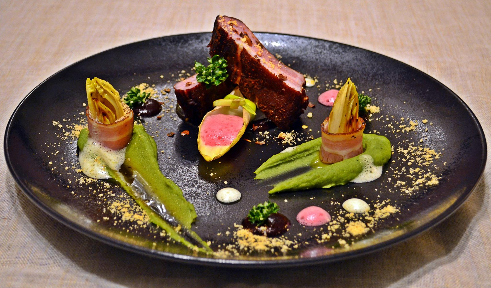

Jak to działa?
Wymarzone przyjęcie w kilku
prostych krokach:
Wybór menu
Skontaktuj się telefonicznie lub mailowo w celu ustalenia szczegółów
przyjęcia, wyboru potraw, lub skomponowania
własnych zestawień. W razie wątpliwości, pytań, a także specjalnych wymagań chętnie służę
pomocą. W trosce
o zadowolenie klienta, gwarantuję indywidualne podejście do każdego zlecenia.
Dodatkowe udogodnienia
W celu zwiększenia komfortu przyjęcia, możesz dodatkowo skorzystać z usług
kelnera, barmana, lub sommeliera, z którymi współpracuję. Wystarczy powiadomić o tym, podczas
ustalania szczegółów.
Twoje przyjęcie
Zjawiam się u Ciebie na około 3h przed planowanym przyjęciem, wraz z
produktami i swoją zastawą, a następnie rozpoczynam przygotowania do przyjęcia. Od tego momentu
już niczym się nie martwisz. Potrawy są serwowane o ustalonej przez Ciebie godzinie, w pełnej
dbałości o profesjonalny wygląd, oraz restauracyjna aranżację.
Happy end
Ty się bawisz, a ja sprzątam po sobie kuchnię, oraz zabieram zastawę. Nie
musisz się martwić o brudne naczynia, ani nieumyte patelnie. W zamian za to, cieszysz się
towarzystwem swoich gości.

- Rolada z biszkoptu szpinakowego, z łososiem wędzonym i chrzanowym
serkiem
- Roladki z pieczonego bakłażana nadziewane pomidorami, pietruszką, z
sosem czosnkowym
- Roladki z łososia wędzonego z ziołowym twarożkiem na plastrach
zielonego ogórka
- Carpaccio z pieczonego buraka z orzechami włoskimi, kozim serem i
aromatycznym dresingiem
- Tartinki z łososiem wędzonym na gorąco i świeżymi warzywami
- Deska ryb wędzonych (np. pstrąg, halibut, sieja, łosoś), grillowane
cytryny, majonez koperkowy
- Deska mięs wędzonych (np. boczek wieprzowy, żeberka, polędwiczka,
kaszanka, domowa kiełbasa, pierś z kaczki),
domowy chrzan i żurawina.
- Plastry rostbefu marynowane w imbirze i sosie sojowym na aromatycznej
rukoli
- Pasztet z gęsi domowego wypieku w towarzystwie karmelizowanej cebuli i
sosu tatarskiego
- Baby mozarella, pomidor koktajlowy, świeża bazylia i sos balsamiczny
- Tatar z łososia z musem z avocado skropiony oliwą z pestek z dyni
podany z chrupiącą ziołową grzanką
- Tatar wołowy w towarzystwie ogórka konserwowego, marynowanych grzybów,
białej cebuli i pudru
musztardowego
- Płatki różowej kaczki owinięte na miodowej gruszce z ruccolą
O mnie
Jestem osobą młodą, ambitną, pełną pasji i miłości do jedzenia. Swoje doświadczenie zdobywałam w renomowanych Trójmiejskich restauracjach, gdzie nauczyłam się szacunku do Polskich produktów, oraz tradycji kulinarnych. Zdobyte umiejętności, oraz wiedzę poddaję próbie kreatywności i przekształcam w niepowtarzalne, autorskie projekty, które zadowalają nawet najbardziej wymagające podniebienia. W swoim gotowaniu wykorzystuję nowoczesne techniki i rozwiązania, takie jak kuchnia molekularna (zaskakujące zestawienia smakowe, tekstury), czy metoda sous-vide (przygotowywanie mięs, ryb, owoców morza, warzyw bez utraty cennych składników odżywczych, oraz smaku). Z największa przyjemnością zapraszam Cię w podróż po moim świecie kulinarnym!